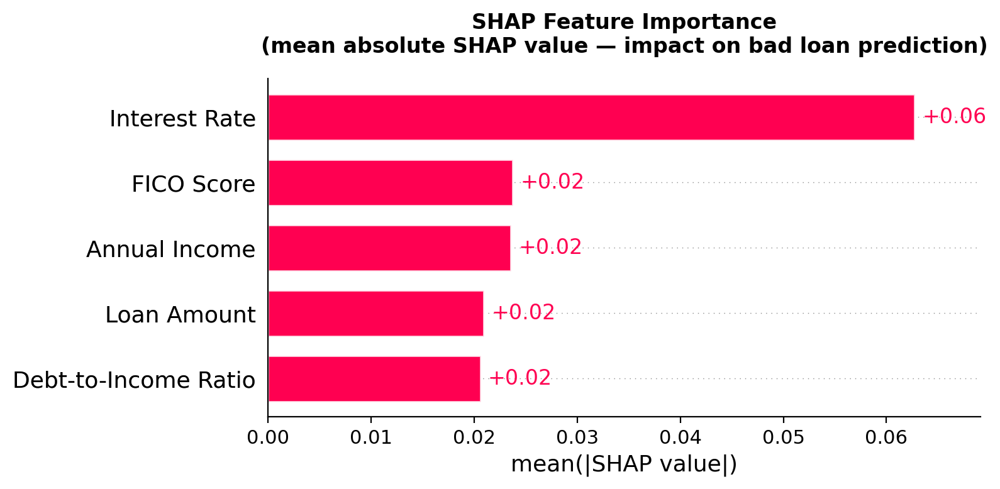
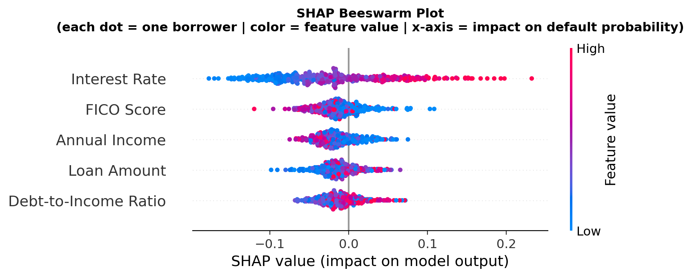
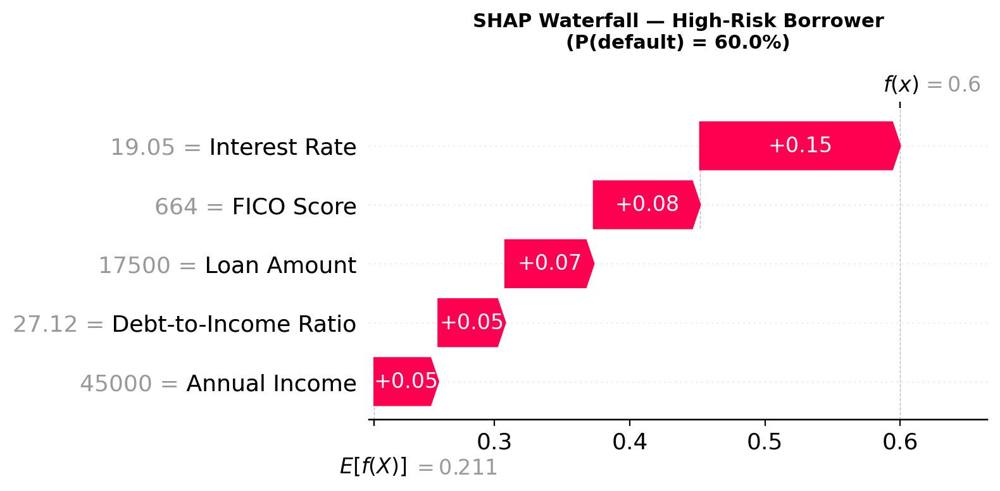
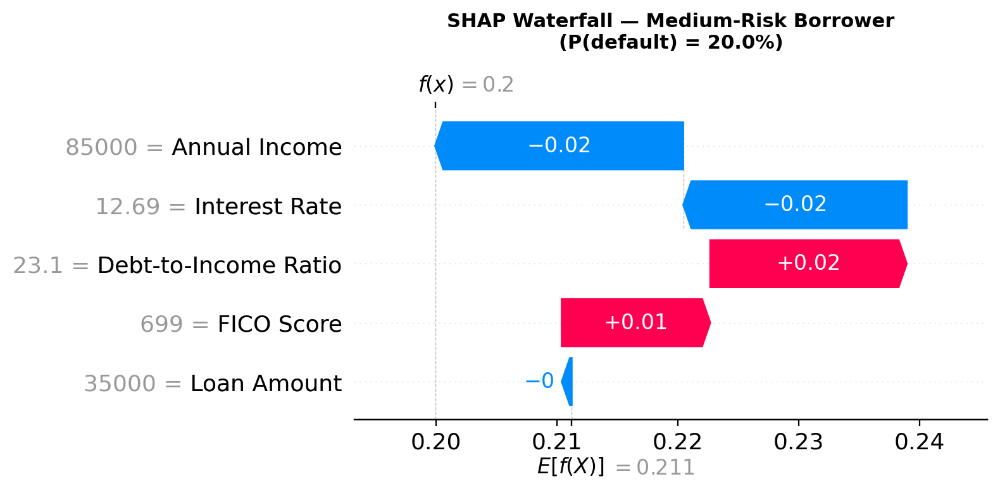
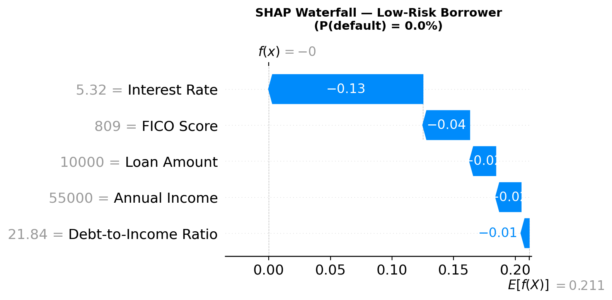

SHAP gives you a mathematically grounded, feature-level explanation for every individual prediction — including exactly why a borrower was declined. Here is how to generate and interpret it on real LendingClub data.
In the previous tutorial we showed why Random Forest is more stable than a single decision tree: a routine 20% monthly portfolio refresh caused 100% of decision tree splits to change, while the Random Forest predictions shifted by only 0.8%. So you chose the stable model.
But stability came at a cost. You can no longer draw your model on a whiteboard. You have 500 trees voting simultaneously, and no single tree tells the story of why any individual borrower was flagged.
Then the declined borrower calls. Your credit committee asks. Your compliance officer needs an answer. Under the Equal Credit Opportunity Act, the borrower has a legal right to know why.
SHAP stands for SHapley Additive exPlanations. The concept comes from game theory, specifically from work by Nobel Prize-winning economist Lloyd Shapley in the 1950s.
Here is the intuition without the math.
Imagine five players on a team win a championship. The prize money needs to be divided fairly. Each player contributed differently: some scored more points, some played better defense, some were injured part of the season. How do you divide the prize?
Shapley's answer: measure how much each player contributed to every possible combination of teammates. A player who consistently made the team better, regardless of who else was playing, deserves a larger share.
SHAP applies exactly this logic to features in a machine learning model. For each prediction, it asks: how much did each feature contribute to pushing this result away from the baseline? A feature that consistently pushed predictions toward default gets a large positive SHAP value. One that consistently pulled toward safety gets a large negative value.
import warnings
warnings.filterwarnings('ignore')
import pandas as pd
import numpy as np
import matplotlib.pyplot as plt
import shap
from sklearn.ensemble import RandomForestClassifier
from sklearn.model_selection import train_test_split
from sklearn.metrics import classification_report
# Install if needed:
# pip install shap scikit-learn pandas numpy matplotlibWe use the same 25,000-loan LendingClub dataset and five features as the previous tutorials. The Random Forest is trained on 80% of the data and evaluated on the remaining 20%.
DATA_PATH = "lendingclub_sample_25000.csv"
df = pd.read_csv(DATA_PATH, low_memory=False)
FEATURES = ['int_rate', 'dti', 'fico_range_high', 'annual_inc', 'loan_amnt']
TARGET = 'bad_loan'
# Readable labels for plots
FEATURE_LABELS = {
'int_rate': 'Interest Rate',
'dti': 'Debt-to-Income Ratio',
'fico_range_high': 'FICO Score',
'annual_inc': 'Annual Income',
'loan_amnt': 'Loan Amount'
}
df = df[FEATURES + [TARGET]].dropna()
df[TARGET] = pd.to_numeric(df[TARGET], errors='coerce')
df = df.dropna()
X = df[FEATURES].rename(columns=FEATURE_LABELS)
y = df[TARGET].astype(int)
X_train, X_test, y_train, y_test = train_test_split(
X, y, test_size=0.2, random_state=42, stratify=y
)
print(f"Dataset: {len(df):,} loans | Bad loan rate: {y.mean():.1%}")
rf = RandomForestClassifier(n_estimators=500, random_state=42, n_jobs=-1)
rf.fit(X_train, y_train)
print(classification_report(y_test, rf.predict(X_test),
target_names=["Good loan", "Default"]))We use shap.TreeExplainer, which is optimised for tree-based models including Random Forest. Computing exact SHAP values for 500 trees across the full test set is slow, so we use a sample of 500 test borrowers and a background of 100 training borrowers.
print("Computing SHAP values — this takes 1-2 minutes...")
# Background sample for the explainer
background = shap.maskers.Independent(X_train, max_samples=100)
explainer = shap.TreeExplainer(rf, background)
# Sample 500 test borrowers for speed
X_sample = X_test.sample(500, random_state=42)
shap_vals = explainer(X_sample)
# shap_vals[:, :, 1] = SHAP values for class 1 (default / bad loan)
sv = shap_vals[:, :, 1]
print("Done.")
# Mean absolute SHAP by feature (global importance)
importance = pd.Series(
np.abs(sv.values).mean(axis=0),
index=X_sample.columns
).sort_values(ascending=False)
print("\nFeature importance (mean |SHAP|):")
print(importance.round(4))shap_vals[:, :, 1] selects SHAP values for the positive class (default = 1). Positive SHAP values push toward default; negative values push toward repayment.
The summary bar chart shows the mean absolute SHAP value for each feature, averaged across all 500 test borrowers. This answers the question: which features consistently drive the model's predictions, regardless of direction?
plt.figure(figsize=(9, 5))
shap.plots.bar(sv, show=False)
plt.title("SHAP Feature Importance\n(mean absolute SHAP value)",
fontsize=12, fontweight='bold', pad=15)
plt.tight_layout()
plt.savefig("shap_summary_bar.png", dpi=200, bbox_inches='tight')
plt.show()
Reading this chart: Each bar shows the mean absolute SHAP value for that feature across all test borrowers. Longer bar means more influence on predictions. Interest Rate at 0.06 is nearly three times more influential than the other four features, which cluster tightly at 0.02. This is the global view — direction not included.
The finding is striking: Interest Rate dominates at 0.06, nearly three times more influential than FICO Score, Annual Income, Loan Amount, and Debt-to-Income Ratio, which each contribute around 0.02.
This makes intuitive sense. In a lending dataset, interest rate is not just a pricing variable. It is a summary statistic of risk. Lenders already price higher rates for borrowers they assess as riskier. The model has learned that the rate itself is the single most powerful signal of eventual default.
The summary bar chart tells you how much each feature matters. It does not tell you how. The beeswarm plot answers the directional question: does a high FICO score increase or decrease default risk? Does a large loan amount push toward safety or danger?
plt.figure(figsize=(9, 6))
shap.plots.beeswarm(sv, show=False)
plt.title("SHAP Beeswarm Plot\n(each dot = one borrower | color = feature value | x-axis = impact)",
fontsize=11, fontweight='bold', pad=15)
plt.tight_layout()
plt.savefig("shap_beeswarm.png", dpi=200, bbox_inches='tight')
plt.show()
How to read this: Each dot is one borrower. Position on the x-axis shows the SHAP value — right means pushed toward default, left means pushed toward safety. Color shows the feature value: red is high, blue is low. Features are sorted by importance (top = most important).
In this Random Forest classifier, SHAP values are in probability units. A SHAP value of +0.15 for interest rate means that feature pushed that specific borrower's predicted default probability up by 15 percentage points above the 21.1% baseline. All five SHAP values sum exactly to the difference between the final prediction and the baseline — the math is precise, not approximate.
This differs from SHAP in other contexts. In Shapley regression, values represent contributions to R². In a regression predicting a continuous outcome, they represent contributions to the predicted value. Here the contribution is to predicted probability of default. What stays constant across all contexts is the core principle: each SHAP value measures how much that feature moved the output away from the baseline, averaged fairly across all possible feature combinations.
Reading each feature row:
Interest Rate. The clearest signal. Red dots (high rates) cluster far to the right, pushing strongly toward default. Blue dots (low rates) cluster far to the left toward safety. The spread reaches +0.20 SHAP at the extreme right — representing the single most rate-sensitive borrower in the sample, whose interest rate alone contributed +0.20 to their predicted default probability above the 21.1% baseline.
FICO Score. The pattern is inverted, as expected. Blue dots (low FICO) push right toward default. Red dots (high FICO) push left toward safety. The effect is meaningful but smaller than interest rate.
Annual Income. The cloud is dense and close to zero. Income matters but modestly. A few red dots (high income) appear on the right — an interesting finding suggesting very high incomes occasionally correlate with larger, riskier loan amounts rather than pure safety.
Loan Amount. Similar to income: a tight cluster near zero. Larger loans show a slight tendency toward default but the effect is small and inconsistent.
Debt-to-Income Ratio. Perhaps the most surprising finding. DTI, which traditional underwriters rely on heavily, shows almost no SHAP signal. The dots barely move from zero in either direction. After accounting for interest rate and FICO, DTI adds very little predictive power in this dataset.
The waterfall plot is where SHAP becomes operationally powerful. It breaks down a single prediction into its component parts — showing exactly how each feature pushed the final result away from the baseline. This is what you put in an adverse action notice.
probs = rf.predict_proba(X_sample)[:, 1]
# Find the highest-risk, medium-risk, and lowest-risk borrowers
high_risk_idx = np.argmax(probs)
mid_risk_idx = np.argmin(np.abs(probs - 0.20)) # closest to 20% probability
low_risk_idx = np.argmin(probs)
print(f"High-risk: P(default) = {probs[high_risk_idx]:.1%}")
print(f"Medium-risk: P(default) = {probs[mid_risk_idx]:.1%}")
print(f"Low-risk: P(default) = {probs[low_risk_idx]:.1%}")
# High-risk waterfall
plt.figure(figsize=(9, 5))
shap.plots.waterfall(sv[high_risk_idx], show=False)
plt.title(f"SHAP Waterfall — High-Risk Borrower (P(default) = {probs[high_risk_idx]:.1%})",
fontsize=11, fontweight='bold', pad=15)
plt.tight_layout()
plt.savefig("shap_waterfall_highrisk.png", dpi=200, bbox_inches='tight')
plt.show()
# Medium-risk waterfall
plt.figure(figsize=(9, 5))
shap.plots.waterfall(sv[mid_risk_idx], show=False)
plt.title(f"SHAP Waterfall — Medium-Risk Borrower (P(default) = {probs[mid_risk_idx]:.1%})",
fontsize=11, fontweight='bold', pad=15)
plt.tight_layout()
plt.savefig("shap_waterfall_midrisk.png", dpi=200, bbox_inches='tight')
plt.show()
# Low-risk waterfall
plt.figure(figsize=(9, 5))
shap.plots.waterfall(sv[low_risk_idx], show=False)
plt.title(f"SHAP Waterfall — Low-Risk Borrower (P(default) = {probs[low_risk_idx]:.1%})",
fontsize=11, fontweight='bold', pad=15)
plt.tight_layout()
plt.savefig("shap_waterfall_lowrisk.png", dpi=200, bbox_inches='tight')
plt.show()
Every feature pushes toward default. Interest rate alone moves the prediction from 21.1% to 36%.
| Feature | Borrower Value | SHAP Value | Direction |
|---|---|---|---|
| Interest Rate | 19.05% | +0.15 | ↑ toward default |
| FICO Score | 664 | +0.08 | ↑ toward default |
| Loan Amount | $17,500 | +0.07 | ↑ toward default |
| Debt-to-Income Ratio | 27.12 | +0.05 | ↑ toward default |
| Annual Income | $45,000 | +0.05 | ↑ toward default |
| Final prediction | 0.211 + 0.40 = 60% probability of default | ||

Features push in opposite directions — the model is weighing competing signals. This is the borderline case where SHAP is most operationally useful. Selected as the borrower closest to the 20% predicted default probability in the sample.
| Feature | Borrower Value | SHAP Value | Direction |
|---|---|---|---|
| Annual Income | $85,000 | -0.02 | ↓ toward safety |
| Interest Rate | 12.69% | -0.02 | ↓ toward safety |
| Debt-to-Income Ratio | 23.1 | +0.02 | ↑ toward default |
| FICO Score | 699 | +0.01 | ↑ toward default |
| Loan Amount | $35,000 | ~0.00 | neutral |
| Final prediction | 0.211 + (-0.01) ≈ 20% probability of default | ||

Every feature pulls toward safety. The 5.32% interest rate alone drops the prediction from 21.1% to roughly 8%.
| Feature | Borrower Value | SHAP Value | Direction |
|---|---|---|---|
| Interest Rate | 5.32% | -0.13 | ↓ toward safety |
| FICO Score | 809 | -0.04 | ↓ toward safety |
| Loan Amount | $10,000 | -0.01 | ↓ toward safety |
| Annual Income | $55,000 | -0.01 | ↓ toward safety |
| Debt-to-Income Ratio | 21.84 | -0.01 | ↓ toward safety |
| Final prediction | 0.211 + (-0.20) ≈ 0% probability of default | ||
How to read the waterfall: The x-axis starts at the baseline (E[f(X)] = 0.211, the portfolio average). Each bar shows how much that feature pushed the prediction right (toward default, red) or left (toward safety, blue). f(x) at the top is the final prediction.
This borrower has a 60% predicted probability of default. Every feature pushed in the same direction:
Same baseline. Same model. Every feature pulled in the opposite direction:
The medium-risk borrower is the most interesting and practically important case. Selected as the borrower closest to 20% predicted default probability — just below the 21.1% portfolio baseline — this borrower has features pushing in opposite directions. Some features increase risk while others mitigate it.
This is the borderline case that makes underwriting genuinely difficult. The high-risk and low-risk borrowers had all five features aligned. Here the model is weighing competing signals, and SHAP shows exactly what those signals are and how much each one matters.
For a borrower predicted at 60% default probability, the adverse action decision is straightforward. For a borrower at 20%, the decision is genuinely close — and the explanation matters more than ever. SHAP gives you the precise language: "Your FICO score and income are working in your favor, but your interest rate and loan amount are offsetting those positives." That is a real, useful explanation for a real, difficult decision.
SHAP is not just analytically useful. It is increasingly operationally necessary.
Under the Equal Credit Opportunity Act (ECOA) and Regulation B, lenders are required to provide adverse action notices to declined applicants. These notices must include specific reasons for the denial — not just "our model said no," but which factors drove the decision.
For the high-risk borrower above, the adverse action reasons write themselves directly from the waterfall plot, ranked by SHAP magnitude:
| Rank | Adverse Action Reason | SHAP Value | Borrower Value |
|---|---|---|---|
| 1 | Interest rate associated with credit profile | +0.15 | 19.05% |
| 2 | Credit score below threshold | +0.08 | 664 |
| 3 | Loan amount relative to income | +0.07 | $17,500 |
| 4 | Debt-to-income ratio | +0.05 | 27.12 |
| 5 | Annual income | +0.05 | $45,000 |
Each reason is ranked, quantified, and grounded in the actual model rather than a hand-coded rule. That is a legally defensible adverse action notice generated automatically from SHAP output.
SHAP is powerful. It is not perfect.
Correlated features. When two features are highly correlated — interest rate and FICO score often are, since lenders price risk into the rate — SHAP distributes the contribution across both. Neither SHAP value tells the complete story alone.
Explanation is not causation. SHAP tells you which features drove the model's prediction, not which features caused the outcome. A borrower flagged for a 19% rate is risky because high-rate borrowers tend to default, not necessarily because the rate itself causes default.
Computational cost. Exact SHAP values for large ensemble models require evaluating many feature combinations. For portfolios with many features and many borrowers, approximate methods may be necessary.
The model still has to be right. SHAP explains what the model did. If the model is biased, SHAP will faithfully explain a biased prediction. Explainability and fairness are related but distinct problems.
Browse all tutorials at james-mott.jimmott52.workers.dev/#tutorials